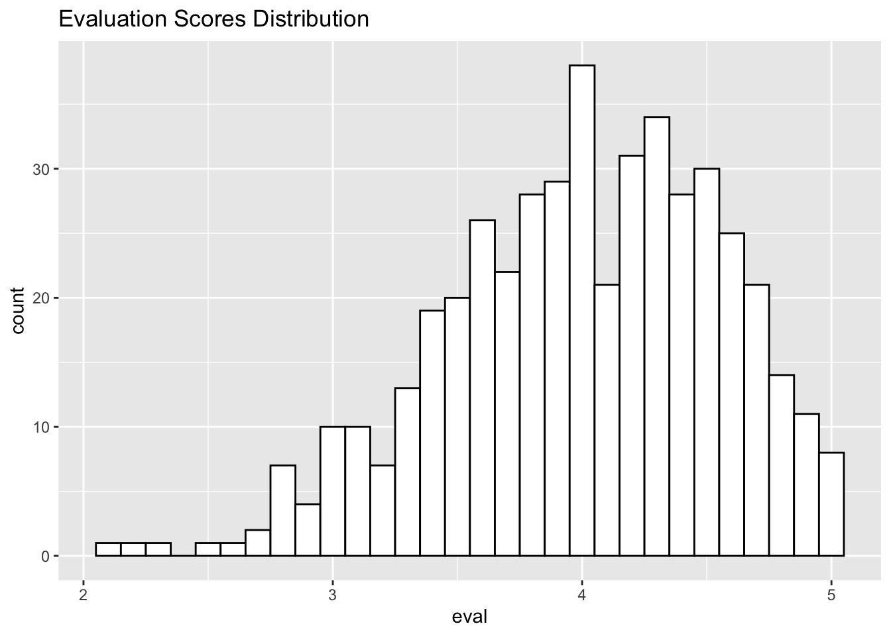
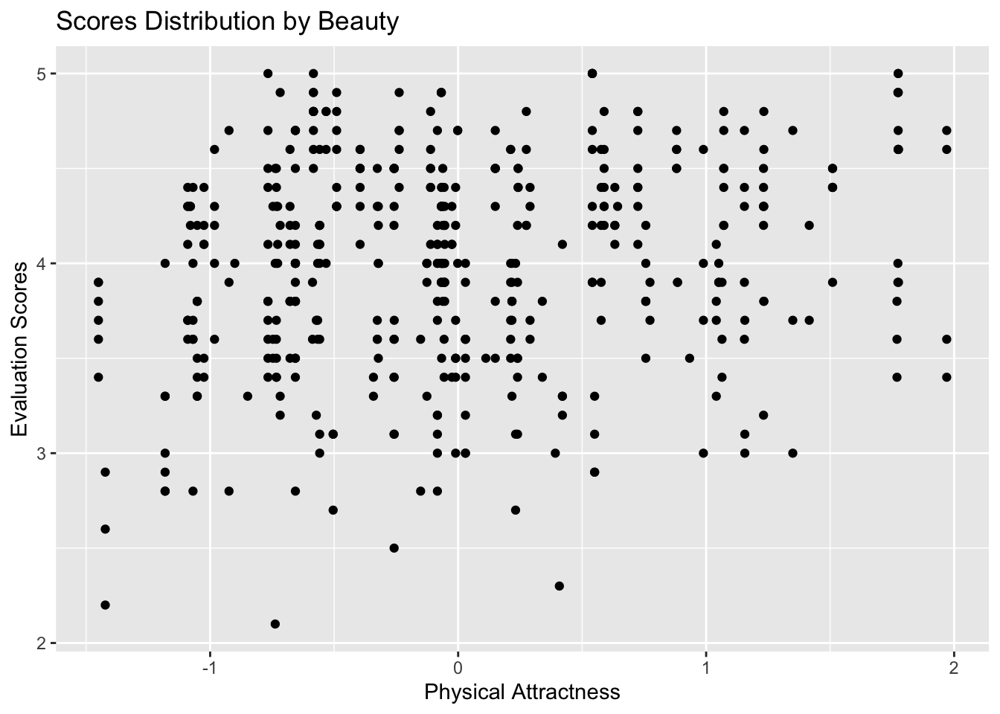
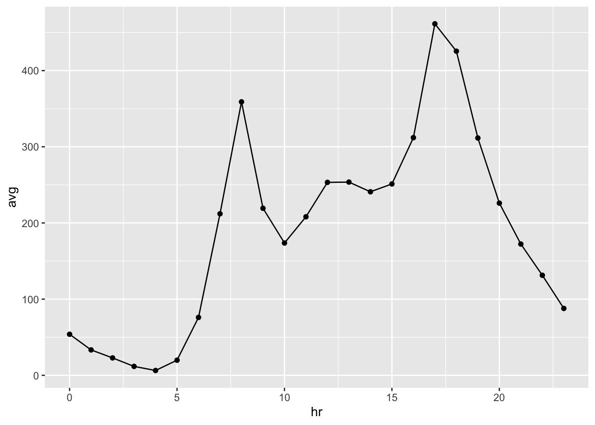
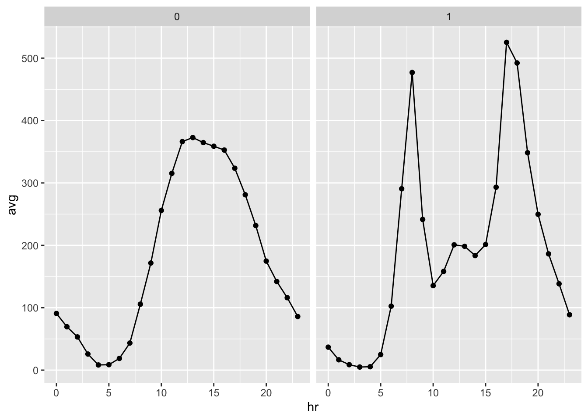

Chapter 1 Homework1
## ── Attaching core tidyverse packages ──────────────────────── tidyverse 2.0.0 ──
## ✔ dplyr 1.1.2 ✔ readr 2.1.4
## ✔ forcats 1.0.0 ✔ stringr 1.5.0
## ✔ ggplot2 3.4.2 ✔ tibble 3.2.1
## ✔ lubridate 1.9.2 ✔ tidyr 1.3.0
## ✔ purrr 1.0.1
## ── Conflicts ────────────────────────────────────────── tidyverse_conflicts() ──
## ✖ dplyr::filter() masks stats::filter()
## ✖ dplyr::lag() masks stats::lag()
## ℹ Use the conflicted package (<http://conflicted.r-lib.org/>) to force all conflicts to become errors1.1 Problem 1 Playlists revisited
playlist = read.csv('/Users/kevin/Academic/MAE/2023 Summer/R&Prob&Stat/Assignments/Data/plays_top50.csv',header = TRUE)1.1.2 Part B
To check out if 2 events are independent, we can use the definition: If A and B are independent, then P(A|B) = P(A|~B) = P(A) To make it clear, “plays Pink Floyd” is considered as event B, another is event A.
## johnny.cash
## 0 1
## 0.94 0.06## pink.floyd
## johnny.cash 0 1
## 0 0.945 0.895
## 1 0.055 0.105Write-up: In this case P(A) = 6%, P(A|B) = 10.5%, P(A|not B) = 5.5%; clearly, they are not equal. Therefore, they are not independent and seem to have positive relationship.
1.2 Problem 2 Super Bowl ads
superbowl = read.csv('/Users/kevin/Academic/MAE/2023 Summer/R&Prob&Stat/Assignments/Data/superbowl.csv',header = TRUE)1.2.1 Part A
## danger
## FALSE TRUE
## 0.7 0.3Write-up: Which returns the results that P(danger = TRUE) = 30%
## funny
## danger FALSE TRUE
## FALSE 0.88 0.61
## TRUE 0.12 0.39Write-up: From the table, we can know that: P(danger = TRUE | funny = TRUE) = 39% P(danger = TRUE | funny = FALSE) = 12%
Undoubtedly, from this statistics, humor and danger are absolutely not independent because P(danger) ≠ P(danger|funny) ≠ P(danger|not funny)
It seems that humor are indeed more or less a indication of danger for this ads, because under the condition that ads are funny, the probability of danger seems to be higher than unconditional probability and under the another condition that ads are not funny, the probability of it shows way much lower than unconditional probability.
1.2.2 Part B
## animals
## FALSE TRUE
## 0.63 0.37Write-up: Which returns the results that P(animals = TRUE) = 37%
## use_sex
## animals FALSE TRUE
## FALSE 0.63 0.62
## TRUE 0.37 0.38Write-up: From the table, we can know that: P(animals = TRUE | use_sex = TRUE) = 38% P(animals = TRUE | use_sex = FALSE) = 37%
From the probability tables and unconditional probability, I think animals and use_sex are statistically independent.My argument is that the unconditional probability of animals seems to be very close to the conditional probabilities on both conditions that using sex and not using, which, from definition,shows this 2 events are independent.
1.2.3 Part C
## celebrity
## FALSE TRUE
## 0.71 0.29Write-up: Which returns the results that P(celebrity = TRUE) = 29%
## patriotic
## celebrity FALSE TRUE
## FALSE 0.71 0.71
## TRUE 0.29 0.29Write-up: From the table, we can know that: P(celebrity = TRUE | patriotic = TRUE) = 29% P(celebrity = TRUE | patriotic = FALSE) = 29%
Similar to Part B, in this part, the unconditional probability of celebrity is nearly equal to the 2 conditional probabilities of both showing patriotic contents and not showing this. Thus, they are independent on the basis of this data.
1.3 Problem 3 Beauty, or not, in the classroom
library(ggplot2)
profs = read.csv('/Users/kevin/Academic/MAE/2023 Summer/R&Prob&Stat/Assignments/Data/profs.csv',header = TRUE)1.3.1 Part A
ggplot(profs,aes(x=eval)) + geom_histogram(color="black", fill="white") + ggtitle('Evaluation Scores Distribution') ## `stat_bin()` using `bins = 30`. Pick better value with `binwidth`.
Write-up: Above is the histogram plot that shows course evaluation scores of all professors. We can see around 4 is where the most scores are sited.
1.3.2 Part B
ggplot(profs, aes(x=native, y=eval, fill=native)) + geom_boxplot() + ggtitle('Scores by whether native or not') Write-up:
1.4 Problem 4 SAT scores for UT students
utsat = read.csv('/Users/kevin/Academic/MAE/2023 Summer/R&Prob&Stat/Assignments/Data/utsat.csv',header = TRUE)
tb = data.frame(Scores = c("SAT-V", "SAT-Q", "GPA"),
Mean = c(mean(utsat$SAT.V), mean(utsat$SAT.Q), mean(utsat$GPA)),
Std = c(sd(utsat$SAT.V), sd(utsat$SAT.Q), sd(utsat$GPA)),
IQR = c(IQR(utsat$SAT.V), IQR(utsat$SAT.Q), IQR(utsat$GPA)),
quan5 = c(quantile(utsat$SAT.V,0.05), quantile(utsat$SAT.Q,0.05), quantile(utsat$GPA,0.05)),
quan25 = c(quantile(utsat$SAT.V,0.25), quantile(utsat$SAT.Q,0.25), quantile(utsat$GPA,0.25)),
median = c(quantile(utsat$SAT.V,0.50), quantile(utsat$SAT.Q,0.50), quantile(utsat$GPA,0.50)),
quan75 = c(quantile(utsat$SAT.V,0.75), quantile(utsat$SAT.Q,0.75), quantile(utsat$GPA,0.75)),
quan95 = c(quantile(utsat$SAT.V,0.95), quantile(utsat$SAT.Q,0.95), quantile(utsat$GPA,0.95)))
show(tb)## Scores Mean Std IQR quan5 quan25 median quan75
## 1 SAT-V 595.049123 83.7679178 110.000 460.00000 540.00000 590.0000 650.00000
## 2 SAT-Q 619.978809 83.0821235 120.000 480.00000 560.00000 620.0000 680.00000
## 3 GPA 3.211605 0.4796321 0.723 2.36055 2.87185 3.2524 3.59485
## quan95
## 1 730.00000
## 2 760.00000
## 3 3.92145Write-up:
1.5 Problem 5 bike sharing
bikeshare = read.csv('/Users/kevin/Academic/MAE/2023 Summer/R&Prob&Stat/Assignments/Data/bikeshare.csv',header = TRUE)1.5.1 Plot A
bikeshare %>%
group_by(hr) %>%
summarise(avg = mean(total)) %>%
ggplot(aes(x=hr, y=avg)) + geom_line()+ geom_point()
1.5.2 Plot B
workingday0_b = bikeshare %>% filter(workingday == 0) %>% group_by(hr) %>% summarise(avg = mean(total)) %>% add_column(workingday = 0)
workingday1_b = bikeshare %>% filter(workingday == 1) %>% group_by(hr) %>% summarise(avg = mean(total)) %>% add_column(workingday = 1)
tb_b = rbind(workingday0_b, workingday1_b)
tb_b %>% ggplot(aes(x=hr,y=avg)) + geom_line()+ geom_point() + facet_wrap(~workingday)
1.5.3 Plot C
workingday0_c = bikeshare %>%
filter(hr == 9) %>%
filter(workingday == 0) %>%
group_by(weathersit) %>%
summarise(avg = mean(total)) %>%
add_column(workingday = 0)
workingday1_c = bikeshare %>%
filter(hr == 9) %>%
filter(workingday == 1) %>%
group_by(weathersit) %>%
summarise(avg = mean(total)) %>%
add_column(workingday = 1)
tb_c = rbind(workingday0_c, workingday1_c)
tb_c %>% ggplot(aes(weathersit,y=avg)) + geom_bar(stat='identity', fill="forest green") + facet_wrap(~workingday)